An arcade cabinet is a box that plays one game. Everything that told you which game — the topper on the crown, the instruction card on the face, the sign over the counter — was printed, disposable, and thrown out the week it stopped being current. That is why it is rare now. Three walls of it here: the retail signs, fifteen PlayChoice-10 toppers, and eighteen VS. instruction cards.
None of this ever ran a game. It hung in a toy store, or over a rental counter, and its whole job was to make a kid stop walking. Three of them survived that job and now light the game room.
Fiber optic
KB Toys co-branded display
Store-glow nostalgia: the fiber optic Nintendo sign that once pulled kids across a mall.
Fluorescent
World of Nintendo Superbrite
The iconic red-and-white World of Nintendo marquee, Superbrite fluorescent version.
NESM36F
NES Racetrack sign
The NES racetrack display, out of the box and on display in the game room.
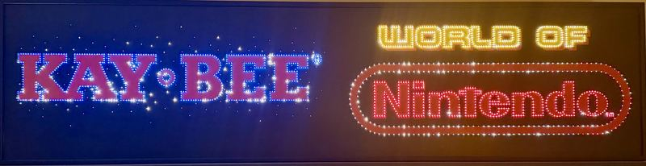
Kay·Bee × World of Nintendo — the co-branded fiber optic, both panels lit
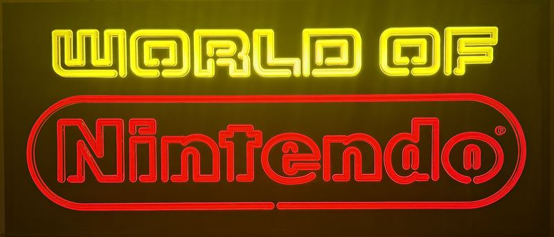
The Superbrite — fluorescent, straight on, no glare
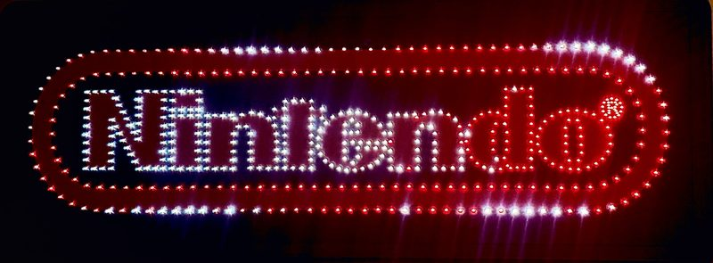
The racetrack — NESM36F, the oval that gives it the name
The PlayChoice-10 topper wall fifteen originals
A PlayChoice-10 held ten games at once, so the cabinet needed a way to say what was in it. Nintendo's answer was the topper: a printed plastic panel that clipped to the crown of the cabinet and announced the game — usually with the word NEW somewhere on it, because the whole point was to tell a room full of quarters that something had changed. Operators swapped them as the game cards rotated, which is exactly why so few survived: they were consumables, printed to be replaced.
These fifteen are originals, and the copyright lines printed on them run from Metroid's 1987 to the Turtles' 1990. They were printed for PlayChoice-10 cabinets; the canopy of the Red Tent is simply where they get displayed. Five more are still on the hunt list.
Castlevania — NEW CHALLENGE — Simon Belmont mid-crack against a red skyChip ’n Dale Rescue Rangers — The Disney one, and no year printed anywhere on itContra — Yellow, and an alien that eats most of the right-hand side
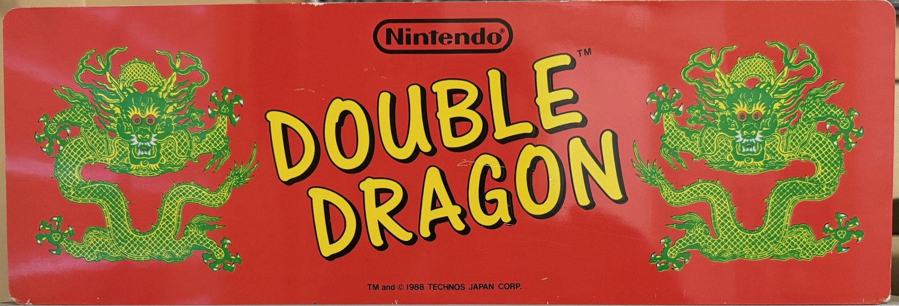
Double Dragon — Technos 1988 — twice the width of a standard topper, and taller with itDr. Mario — A capsule laid across a green checkerboard, viruses loose around itMega Man 3 — Chrome lettering, and Rush along for the rideMetroid — NEW ADVENTURE, and Samus in yellow on a field of yellow — the copyright line reads 1987Mike Tyson's Punch-Out!! — Printed on mirror foil — it reflects whatever is standing in front of itNinja Gaiden — NEW GAME! sprayed on the brick, Ryu drawn as a silhouette
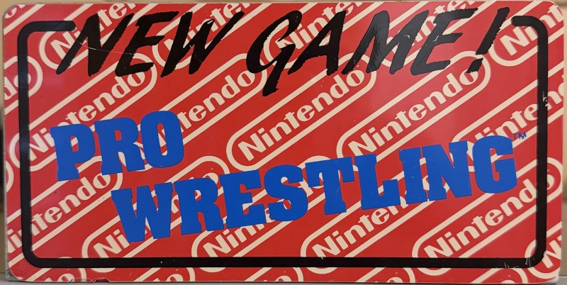
Pro Wrestling — NEW GAME! hand-lettered across a wallpaper of Nintendo logosRad Racer — The first topper to come off the hunt listR.C. Pro-Am — Rare drew the buggy; the checkerboard runs the full widthSuper Mario Bros. 2 — Mario on blue, throwing the shape of a turnipSuper Mario Bros. 3 — Raccoon Mario, a leaf, and three stars on near-whiteTeenage Mutant Ninja Turtles II — THE ARCADE GAME — all four turtles on Konami orange
The VS. instruction card wall eighteen cards
The Nintendo VS. System was a cabinet with a swappable board. Change the PCB and the machine became a different game — which left the operator holding a cabinet that no longer said what it was. The instruction card was the fix: a square of printed paper, adhered to the face beside the controls, carrying the title, the button layout and the rules in about two hundred words. Every card here was printed for one specific machine: the VS. DualSystem cocktail — the Red Tent in the game room.
Change the board, peel the card, apply the next one. Nobody kept the one they peeled. These eighteen are operator stock that never went on a cabinet at all — adhesive-backed, and still on their backing. Eleven are Nintendo’s own titles; six carry a licensee’s name printed right on the card, because the VS. System was a platform Nintendo rented out; the last is the PlayChoice channel-select card. Three more are still on the hunt list.
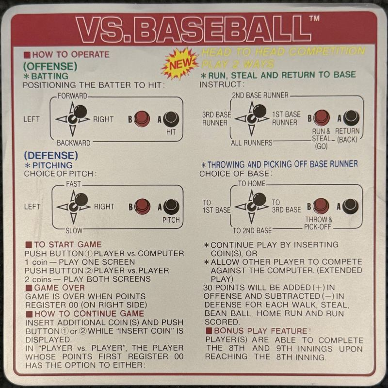
VS. Baseball — Nintendo’s own, and the only card in the set that shouts — a NEW starburst printed over the batting diagram
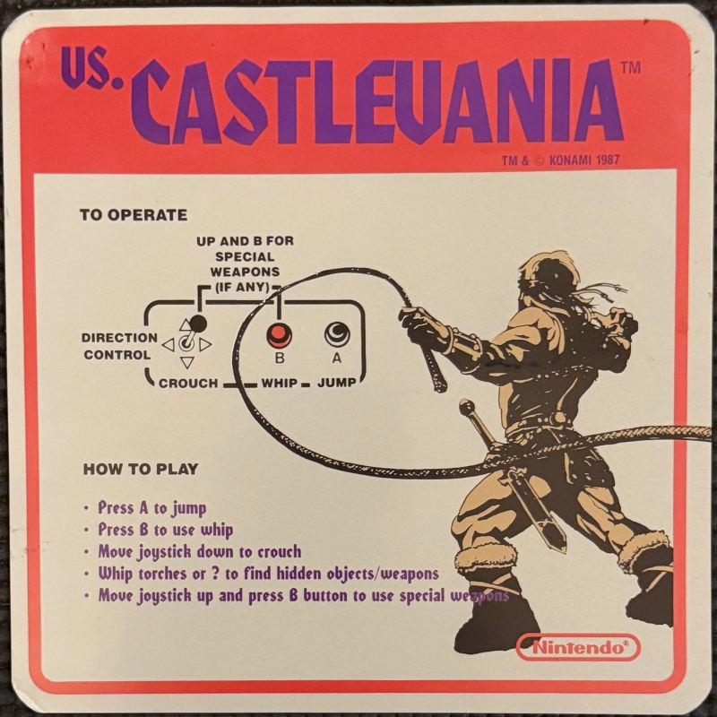
VS. Castlevania — Konami 1987 — Simon Belmont mid-crack, printed in sepia while every other card runs full color
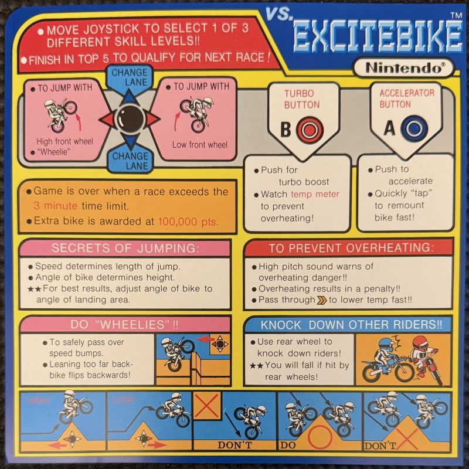
VS. Excitebike — A dozen panels, an overheating meter, and a row of DO and DON’T along the bottom
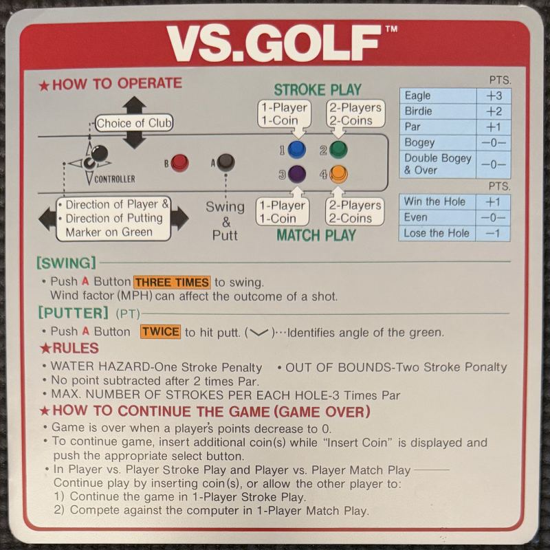
VS. Golf — Two scoring tables, a wind factor, and a putter that wants the button pressed twice
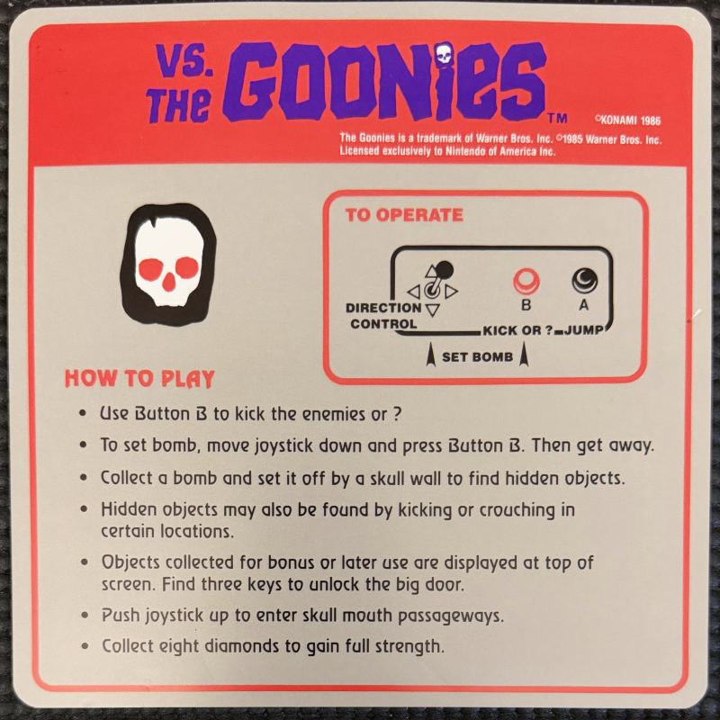
VS. The Goonies — Konami 1986, licensed from Warner Bros., and the skull is the only picture on it
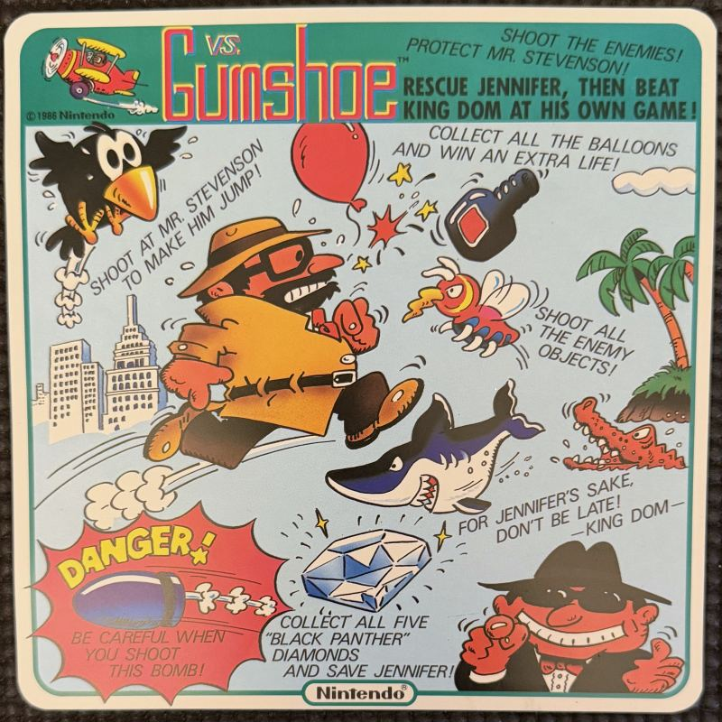
VS. Gumshoe — Barely an instruction card at all — almost the whole face is one cartoon of Mr. Stevenson and the balloons
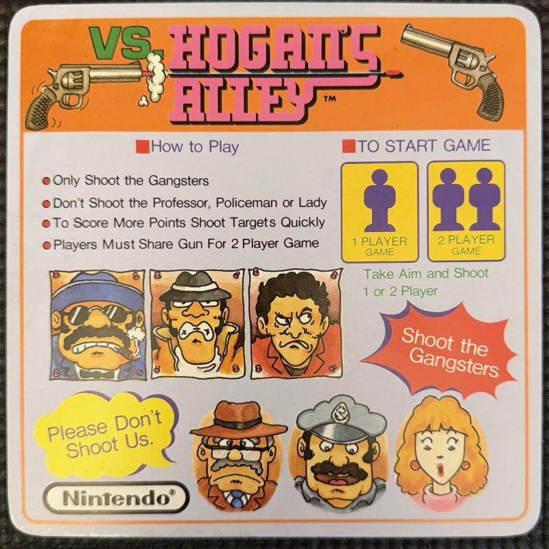
VS. Hogan’s Alley — Three gangsters up top to shoot, and three faces below asking you not to
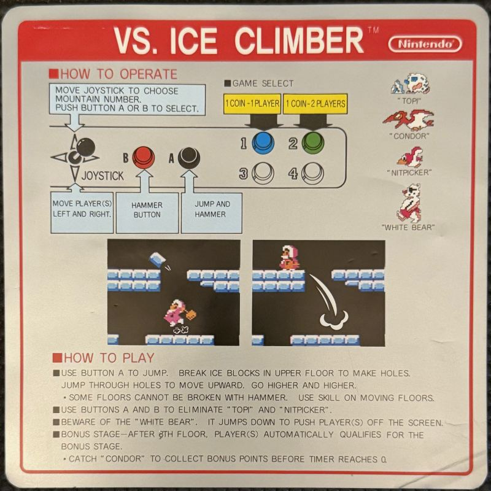
VS. Ice Climber — Two screenshots printed straight into the middle of the card, back when that was how you showed a game
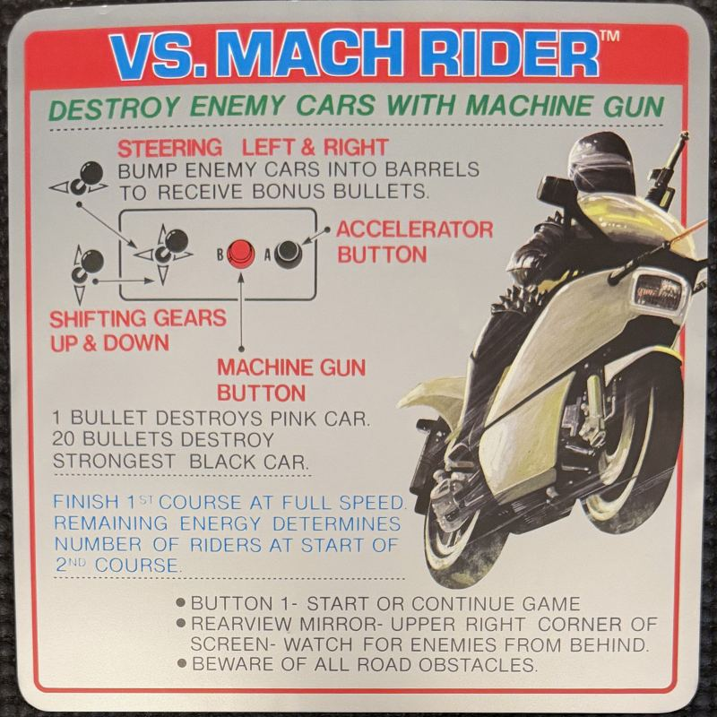
VS. Mach Rider — The bluntest line on the wall, printed across the top: DESTROY ENEMY CARS WITH MACHINE GUN
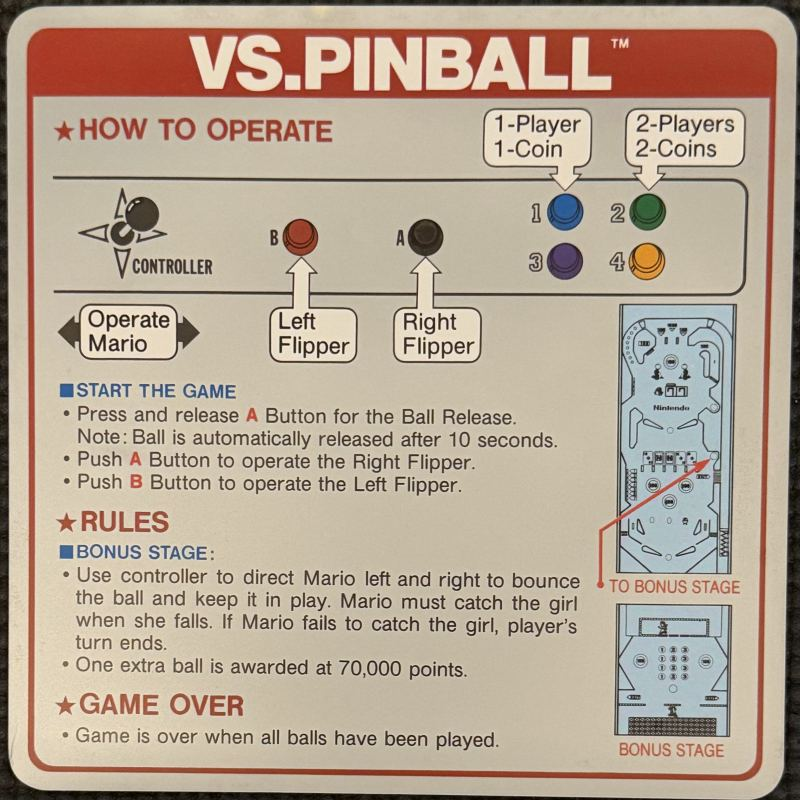
VS. Pinball — A playfield drawn in miniature in the corner, with the bonus stage flagged in red
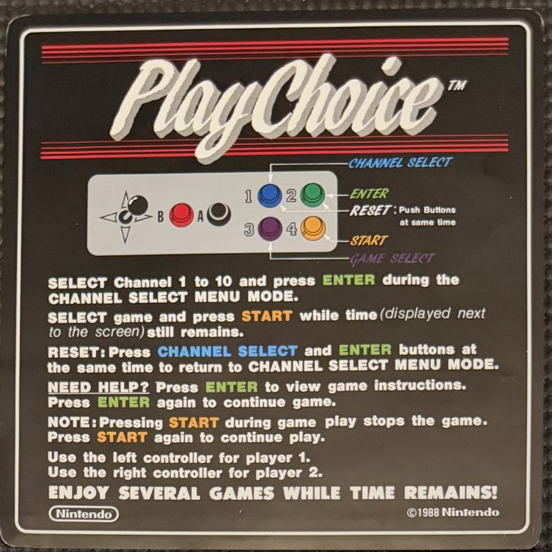
PlayChoice — Not a game card but a menu card: ten titles on one board, so it explains the channel select instead of the controls
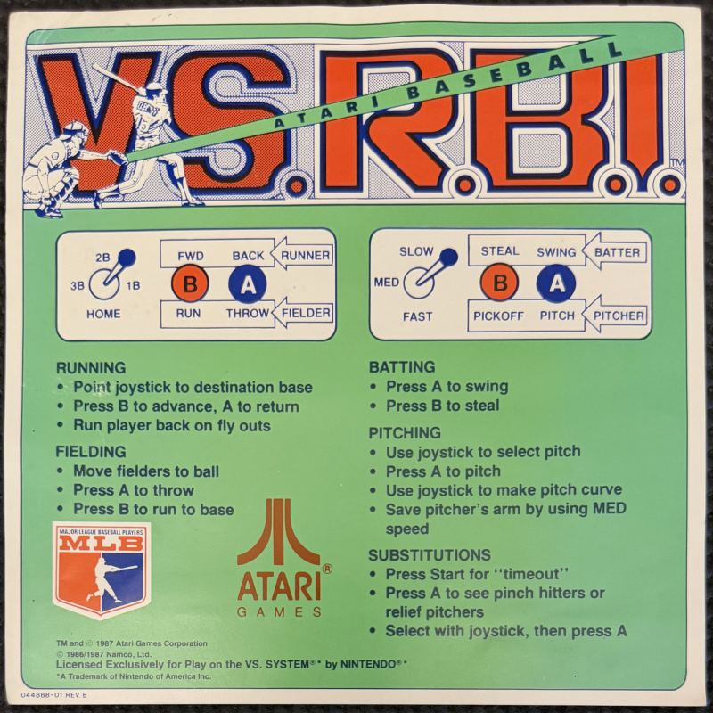
VS. R.B.I. Baseball — Atari Games, and the only card carrying an MLB Players Association mark alongside the Nintendo license line
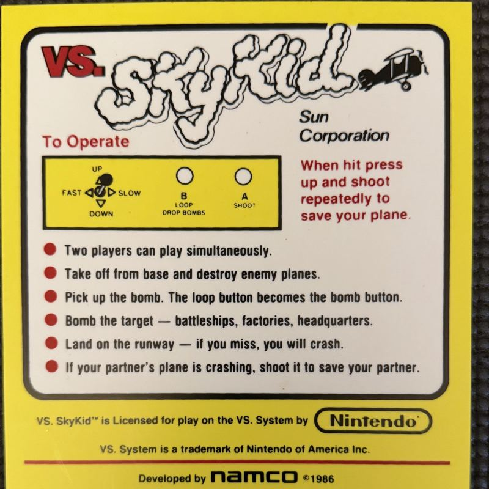
VS. Sky Kid — Developed by Namco, published under Sun Corporation — and the only yellow card in the set
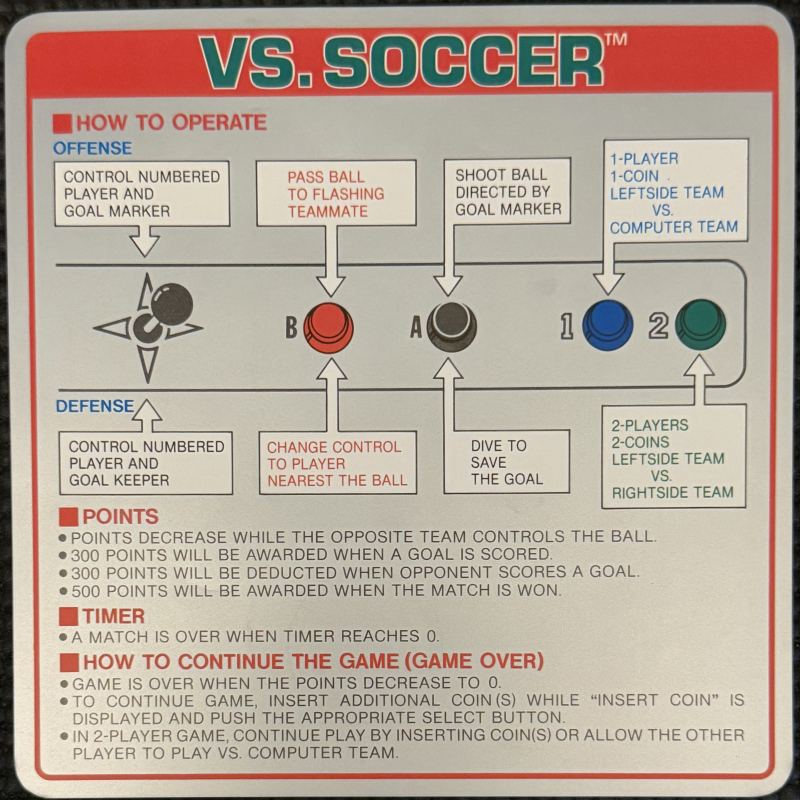
VS. Soccer — Offense and defense drawn as two flowcharts, both pointing at the same two buttons